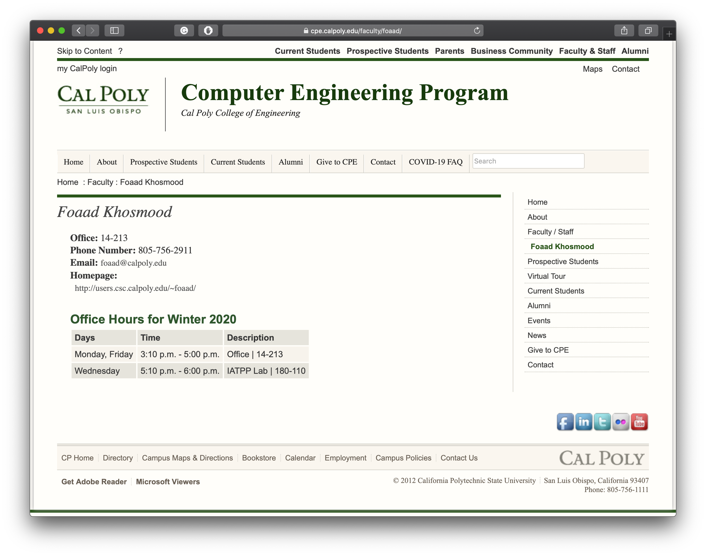

Module ntfp.ntfp_types
Expand source code
#!/usr/bin/env python3
# flake8: noqa
from typing import Callable, Iterator, List, NewType, Type
from typing_extensions import Literal
__pdoc__ = {}
Question = NewType("Question", str)
"""Question"""
__pdoc__[
"Question"
] = """A Question type
Example:
[`Question`](#ntfp.ntfp_types.Question): "what is foaad khosmood's email?"
[`Query`](#ntfp.ntfp_types.Query): "what is foaad khosmood's email? site:calpoly.edu"
[`Context`](#ntfp.ntfp_types.Context): "The email is foaad@calpoly.edu."
[`Answer`](#ntfp.ntfp_types.Answer): "foaad@calpoly.edu"
"""
Query = NewType("Query", str)
"""Query"""
__pdoc__[
"Query"
] = """A Query type
Has _subtype_ [`SanitizedQuery`](#ntfp.ntfp_types.SanitizedQuery)
Example:
[`Question`](#ntfp.ntfp_types.Question): "what is foaad khosmood's email?"
[`Query`](#ntfp.ntfp_types.Query): "what is foaad khosmood's email? site:calpoly.edu"
[`Context`](#ntfp.ntfp_types.Context): "The email is foaad@calpoly.edu."
[`Answer`](#ntfp.ntfp_types.Answer): "foaad@calpoly.edu"
"""
SanitizedQuery = NewType("SanitizedQuery", Query)
"""SanitizedQuery"""
__pdoc__[
"SanitizedQuery"
] = """A SanitizedQuery type
Has _supertype_ [`Query`](#ntfp.ntfp_types.Query).
Example:
```
"what+is+foaad+khosmood%27s+email%3F+site%3Acalpoly.edu"
```
"""
WebPage = NewType("WebPage", str)
"""WebPage"""
__pdoc__[
"WebPage"
] = """A WebPage type
Has _subtype_ [`GooglePage`](#ntfp.ntfp_types.GooglePage).
Has _subtype_ [`GoogleResultURLPage`](#ntfp.ntfp_types.GoogleResultURLPage).
Just a string of HTML.
Example:
```
"<html><body><div>...Website.com...</div></body></html>"
```
"""
WebPages = List[WebPage]
WebPageIterataor = Iterator[WebPage]
URL = NewType("URL", str)
"""URL"""
__pdoc__[
"URL"
] = """A URL type
Has _subtype_ [`GoogleResultURL`](#ntfp.ntfp_types.GoogleResultURL).
Example:
```
"https://www.website.com/..."
```
"""
URLs = List[URL]
URLIterataor = Iterator[URL]
GooglePage = NewType("GooglePage", WebPage)
"""GooglePage"""
__pdoc__[
"GooglePage"
] = """A GooglePage type
Has _supertype_ [`WebPage`](#ntfp.ntfp_types.WebPage).
The actual Google search page with results.
Example:
```
"<html><body><div>...Google.com...</div></body></html>"
```
[**Click here for an example GooglePage**][4]
[4]: http://google.com/search?q=what+is+foaad+email?+site:calpoly.edu
"""
GooglePages = List[GooglePage]
GooglePageIterataor = Iterator[GooglePage]
GoogleResultURL = NewType("GoogleResultURL", URL)
"""GoogleResultURL"""
__pdoc__[
"GoogleResultURL"
] = """A GoogleResultURL type
Has _supertype_ [`URL`](#ntfp.ntfp_types.URL).
A URL found in a [`GooglePage`](#ntfp.ntfp_types.GooglePage) like:
```
"http://google.com/search?q=what+is+foaad+email?+site:calpoly.edu"
```
Example:
>>> query: Query = Query("what is foaad site:calpoly.edu")
>>> get_google_result_urls(query)
... [
... 'https://cpe.calpoly.edu/faculty/foaad/',
... 'http://users.csc.calpoly.edu/~dekhtyar/466-Spring2012/',
... 'https://lib.calpoly.edu/events/my-tech-journey/',
... 'https://cpe.calpoly.edu/faculty/',
... '...'
... ]
### Image Example
The GoogleResultURLs are the clickable purple or blue text in the image below.
<br>
The first example GoogleResultURL below is _"https://cpe.calpoly.edu/faculty/foaad/"_
<br>
<img src="../google.png"
alt="google.png"
width="400px"
title="the GoogleResultURLs are the clickable purple or blue text in this image."/>
"""
GoogleResultURLs = List[GoogleResultURL]
GoogleResultURLIterator = Iterator[GoogleResultURL]
GoogleResultURLPage = NewType("GoogleResultURLPage", WebPage)
"""GoogleResultURLPage"""
__pdoc__[
"GoogleResultURLPage"
] = """A GoogleResultURLPage type
Has _supertype_ [`WebPage`](#ntfp.ntfp_types.WebPage).
Example:
```
"<html><body><div>...ResultURL.com...</div></body></html>"
```
### Image Example
[**Clicking on the first link**][1] in the below image of a Google search would then display a GoogleResultURLPage.
<div>
<img src="../google.png"
alt="google.png"
width="400px"
title="The GooglePage from searching 'What is Foaad Khosmood's email?'/>
</div>
###
Which then leads you to the GoogleResultURLPage depicted by the image below.
<div>
<img src="../GoogleResultURLPage.png"
alt="GoogleResultURLPage.png"
width="400px"
title="The GoogleResultURLPage after clicking the first link in the GooglePage."/>
</div>
[1]: https://cpe.calpoly.edu/faculty/foaad/
"""
GoogleResultURLPages = List[GoogleResultURLPage]
GoogleResultURLPageIterator = Iterator[GoogleResultURLPage]
Context = NewType("Context", str)
"""Context"""
__pdoc__[
"Context"
] = """A Context type
Has _subtype_ [`GoogleContext`](#ntfp.ntfp_types.GoogleContext).
Has _subtype_ [`WebPageContext`](#ntfp.ntfp_types.WebPageContext).
Example:
[`Question`](#ntfp.ntfp_types.Question): "what is foaad khosmood's email?"
[`Query`](#ntfp.ntfp_types.Query): "what is foaad khosmood's email? site:calpoly.edu"
[`Context`](#ntfp.ntfp_types.Context): "The email is foaad@calpoly.edu."
[`Answer`](#ntfp.ntfp_types.Answer): "foaad@calpoly.edu"
"""
GoogleContext = NewType("GoogleContext", Context)
"""GoogleContext"""
__pdoc__[
"GoogleContext"
] = """A GoogleContext type
Has _supertype_ [`Context`](#ntfp.ntfp_types.Context).
The short preview text that Google shows within the \
[`GooglePage`](#ntfp.ntfp_types.GooglePage) \
just below the [`GoogleResultURL`](#ntfp.ntfp_types.GoogleResultURL).
That text often contains words that Google has deemed most _relevant_ to \
the query, and sometimes sufficiently answers the question.
Example:
[Click here for an example Google Search][4] and determine for yourself \
if the short block of text below each \
[`GoogleResultURL`](#ntfp.ntfp_types.GoogleResultURL) \
sufficiently answers the question.
### Image Example
See the highlighted text below.
<br>
<img src="../google.png"
alt="google.png"
width="400px"
title="the highlighted text is a GoogleContext"/>
[4]: http://google.com/search?q=what+is+foaad+email?+site:calpoly.edu
"""
GoogleContexts = List[GoogleContext]
GoogleContextIterator = Iterator[GoogleContext]
WebPageContext = NewType("WebPageContext", Context)
"""WebPageContext"""
__pdoc__[
"WebPageContext"
] = """A WebPageContext type
Has _supertype_ [`Context`](#ntfp.ntfp_types.Context)
**The text content of a [`WebPage`](#ntfp.ntfp_types.WebPage).**
Example:
>>> html = "<html><div>Hello World!</div><code>126/3==42</code></html>"
>>> g: GoogleResultURLPage = GoogleResultURLPage(html)
>>> wpc: WebPageContext = extract_webpage_context(g)
>>> wpc
... 'Hello World!126/3==42'
"""
Answer = NewType("Answer", str)
"""Answer"""
__pdoc__[
"Answer"
] = """An Answer type
Example:
[`Question`](#ntfp.ntfp_types.Question): "what is foaad khosmood's email?"
[`Query`](#ntfp.ntfp_types.Query): "what is foaad khosmood's email? site:calpoly.edu"
[`Context`](#ntfp.ntfp_types.Context): "The email is foaad@calpoly.edu."
[`Answer`](#ntfp.ntfp_types.Answer): "foaad@calpoly.edu"
"""
IDK_TYPE = Literal["¯\\_(ツ)_/¯"]
"""IDK_TYPE = `Literal["¯\\_(ツ)_/¯"]`"""
IDK: IDK_TYPE = "¯\\_(ツ)_/¯"
"""IDK: `IDK_TYPE`"""
if __name__ == "__main__":
question: Question = Question("what is the meaning of life?")
context: Context = Context("The meaning of life is 42.")
t: Callable[[Question, Context], Answer] = lambda q, c: Answer("42")
answer: Answer = t(question, context)
print(answer)Global variables
var IDK-
IDK:
IDK_TYPE var IDK_TYPE-
IDK_TYPE =
Literal["¯\_(ツ)_/¯"]
Functions
def Answer(x)-
An Answer type
Example
Question: "what is foaad khosmood's email?"Query: "what is foaad khosmood's email? site:calpoly.edu"Context: "The email is foaad@calpoly.edu."Answer: "foaad@calpoly.edu"Expand source code
def new_type(x): return x def Context(x)-
A Context type
Has subtype
GoogleContext.Has subtype
WebPageContext.Example
Question: "what is foaad khosmood's email?"Query: "what is foaad khosmood's email? site:calpoly.edu"Context: "The email is foaad@calpoly.edu."Answer: "foaad@calpoly.edu"Expand source code
def new_type(x): return x def GoogleContext(x)-
A GoogleContext type
Has supertype
Context.The short preview text that Google shows within the
GooglePagejust below theGoogleResultURL.That text often contains words that Google has deemed most relevant to the query, and sometimes sufficiently answers the question.
Example
Click here for an example Google Search and determine for yourself if the short block of text below each
GoogleResultURLsufficiently answers the question.Image Example
See the highlighted text below.

Expand source code
def new_type(x): return x def GooglePage(x)-
A GooglePage type
Has supertype
WebPage.The actual Google search page with results.
Example
"<html><body><div>...Google.com...</div></body></html>"Expand source code
def new_type(x): return x def GoogleResultURL(x)-
A GoogleResultURL type
Has supertype
URL.A URL found in a
GooglePagelike:"http://google.com/search?q=what+is+foaad+email?+site:calpoly.edu"Example
>>> query: Query = Query("what is foaad site:calpoly.edu") >>> get_google_result_urls(query) ... [ ... 'https://cpe.calpoly.edu/faculty/foaad/', ... 'http://users.csc.calpoly.edu/~dekhtyar/466-Spring2012/', ... 'https://lib.calpoly.edu/events/my-tech-journey/', ... 'https://cpe.calpoly.edu/faculty/', ... '...' ... ]Image Example
The GoogleResultURLs are the clickable purple or blue text in the image below.
The first example GoogleResultURL below is "https://cpe.calpoly.edu/faculty/foaad/"
Expand source code
def new_type(x): return x def GoogleResultURLPage(x)-
A GoogleResultURLPage type
Has supertype
WebPage.Example
"<html><body><div>...ResultURL.com...</div></body></html>"Image Example
Clicking on the first link in the below image of a Google search would then display a GoogleResultURLPage.
Which then leads you to the GoogleResultURLPage depicted by the image below.
Expand source code
def new_type(x): return xdef Query(x)A Query type
Has subtype
SanitizedQueryExample
Question: "what is foaad khosmood's email?"Query: "what is foaad khosmood's email? site:calpoly.edu"Context: "The email is foaad@calpoly.edu."Answer: "foaad@calpoly.edu"Expand source code
def new_type(x): return xdef Question(x)A Question type
Example
Question: "what is foaad khosmood's email?"Query: "what is foaad khosmood's email? site:calpoly.edu"Context: "The email is foaad@calpoly.edu."Answer: "foaad@calpoly.edu"Expand source code
def new_type(x): return xdef SanitizedQuery(x)A SanitizedQuery type
Has supertype
Query.Example
"what+is+foaad+khosmood%27s+email%3F+site%3Acalpoly.edu"Expand source code
def new_type(x): return xdef URL(x)A URL type
Has subtype
GoogleResultURL.Example
"https://www.website.com/..."Expand source code
def new_type(x): return xdef WebPage(x)A WebPage type
Has subtype
GooglePage.Has subtype
GoogleResultURLPage.Just a string of HTML.
Example
"<html><body><div>...Website.com...</div></body></html>"Expand source code
def new_type(x): return xdef WebPageContext(x)A WebPageContext type
Has supertype
ContextThe text content of a
WebPage.Example
>>> html = "<html><div>Hello World!</div><code>126/3==42</code></html>" >>> g: GoogleResultURLPage = GoogleResultURLPage(html) >>> wpc: WebPageContext = extract_webpage_context(g) >>> wpc ... 'Hello World!126/3==42'Expand source code
def new_type(x): return x